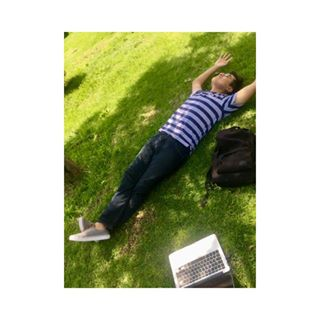

Ejemplo
Datos Personales
Nombre:
Luis Diego Jiménez Delgado

Fecha de Nacimeinto:
3 de agosto del 2000
Signo zodiacal:
Leo
Direccion:
Corumbá 550,
Correo Electrónico:
Twitter:
Facebook:
Intagram:
Situacion Académica
Nivel Medio Superior:
Cecyt #9
Promedio:
8.8
Nivel Superior:
ESCOM
Promedio acutal:
8.0
Semestre
3ro
Otros Datos
Pasatiempo:
Materias que me gustan:
- Teoría Computacional
- Tecnologías Web
Materias que menos me gustan:
- Teoría Computacional
- Tecnologías Web
Canción Favorita:
California Dreamin' - José Feliciano
Pelicula Favorita:
El gato con botas
Noticias
Incendios en el Amazonas
El gobierno de Brasil informó que rechazará la oferta de ayuda
ofrecida por el grupo de
países del G7 (Estados Unidos, Francia, Alemania, Japón, Canadá,
Reino Unido e Italia)
para ayudar a combatir los incendios que consumen la Amazonía.
Este lunes, durante la cumbre de los líderes de los siete países
en la localidad
francesa de Biarritz, el presidente de Francia, Emmanuel Macron,
informó sobre la
creación de un fondo de US$22 millones para colaborar en la
lucha contra el fuego.
El G7 aprueba un fondo de US$22 millones para ayudar a combatir
los incendios en el
Amazonas
"Agradecemos la oferta, pero tal vez esos recursos sean más
útiles para reforestar a
Europa", dijo tras el anuncio Onyx Lorenzoni, jefe de gabinete
del presidente de Brasil,
Jair Bolsonaro, según los medios brasileños.
"Macron no pudo prevenir un incendio en una iglesia que es
considerada patrimonio de la
humanidad y ¿ahora quiere darnos lecciones?", agregó, en
referencia a las llamas que
devastaron la catedral de Notre Dame, en París, el pasado abril.
El ministro de Medio Ambiente de Brasil, Ricardo Salles, había
dicho que su país
agradecería la financiación del G7, pero después de una reunión
entre Bolsonaro y sus
ministros el gobierno brasileño cambió el discurso.
Fake news, aportes de campaña y transparencia
A esta altura, con su sexta edición al hilo, la Media Party
(https://mediaparty.info/es/
) es un evento tan instalado como indispensable: cada año desde
2014, alrededor de 2500
emprendedores, periodistas, programadores de software y
diseñadores de cinco continentes
se dan cita para discutir, debatir, conocer y aprender sobre el
presente –y sobre todo
adivinar el futuro– del periodismo. Y como en cada edición, en
ésta que se desarrollará
entre el jueves 29 y el sábado 31 en la Ciudad Cultural Konex
también aparecerán los
casos que refrendan el quehacer correcto y señalan rumbos
posibles, aunque nunca
sellados, dicen. Es el ejemplo de ProPublica
(https://www.propublica.org/ ), una
organización sin fines de lucro dedicada al periodismo de
investigación que, desde su
inauguración en 2007, ha sido señalada en el mundo entero como
el modelo a seguir, con
su combinado de riqueza periodística, éxito financiero –mediante
donaciones de
importantes filántropos y aportes de los lectores– y la entrega
de importantes
investigaciones a grandes medios sin cobrarles por ello. Su
objetivo es difundir lo que
investigan.
Me hackearon mi cuenta de Instagram y perdí mi negocio
Bree Kotomah, una joven británica de 23 años, casi se dio por
vencida en el momento más
exitoso de su floreciente carrera como diseñadora de moda.
En noviembre de 2018 unos piratas informáticos comprometieron la
cuenta de Instagram de
su marca Boresa Kotomah, que en ese momento solo contaba con la
plataforma como forma de
promoción y venta.
"Desafortunadamente, en ese momento ejecutaba todo en Instagram,
así que cuando mi
cuenta desapareció, todo el negocio desapareció", le dijo la
joven a BBC Radio 5 Live.
Kotomah se despertó una mañana y su cuenta había sido eliminada.
"Instagram decía que había violado algunos términos y que había
hecho ciertas cosas que
sé que no hice", expuso.s